長期トレンド
JKMとJEPXシステムプライスの推移グラフ
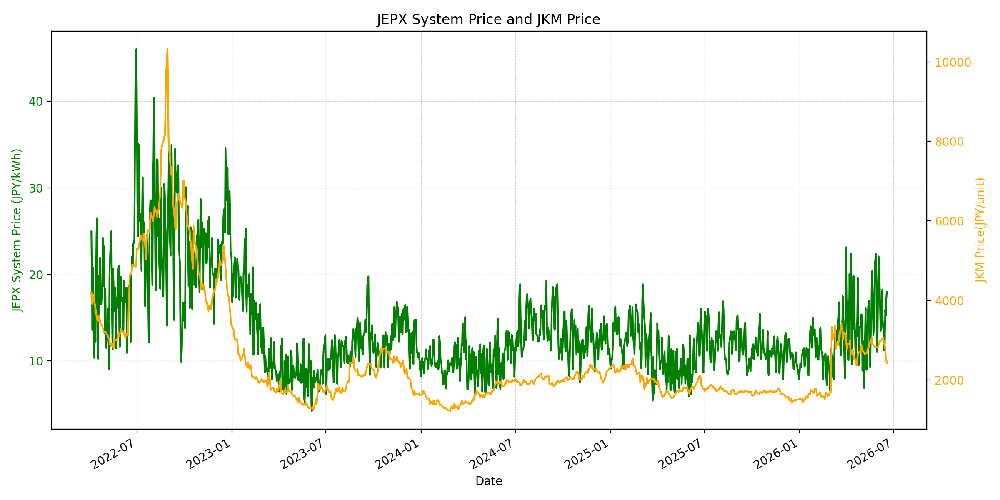
WTIの推移グラフ

JEPXエリアプライスグラフ（直近一年分）
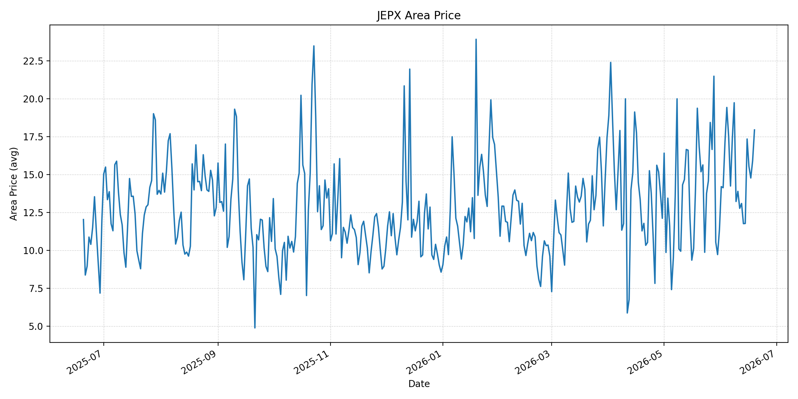
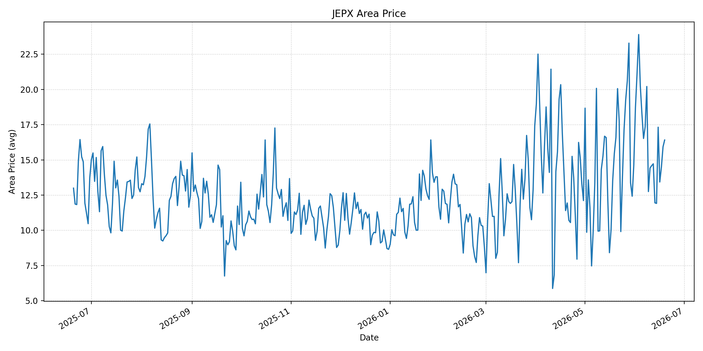
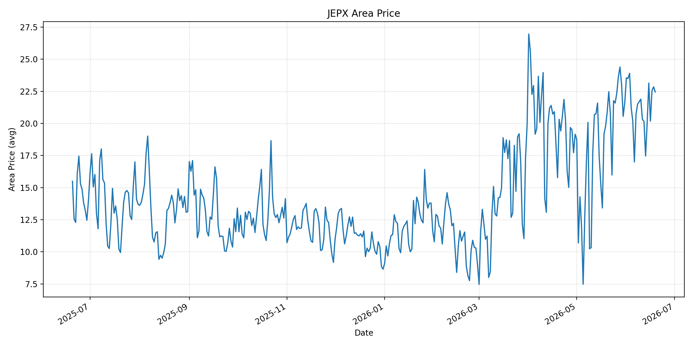
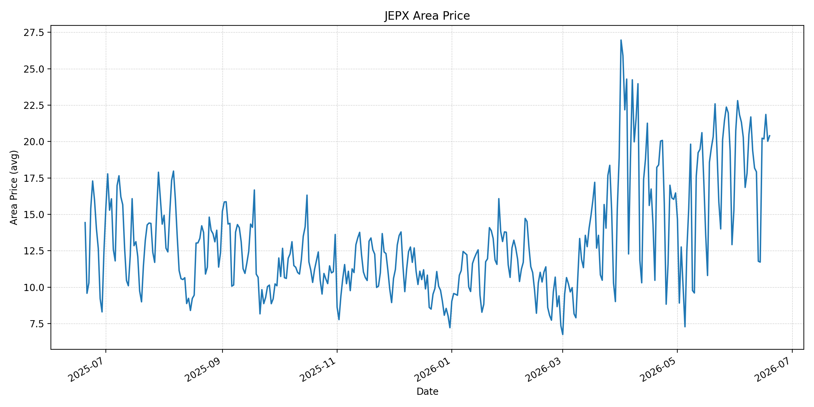
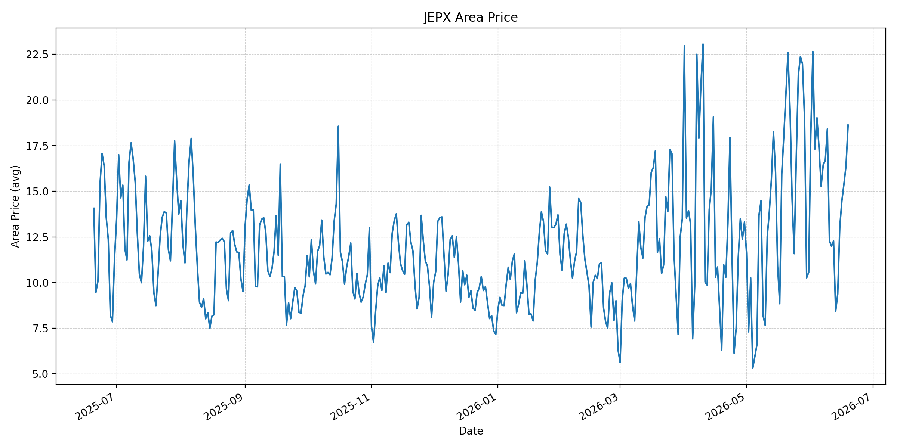
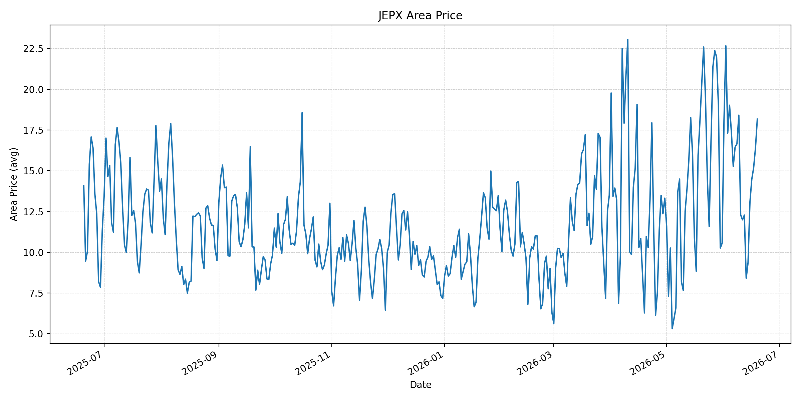
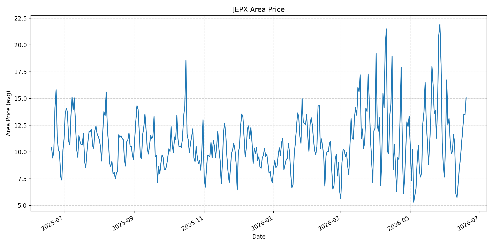
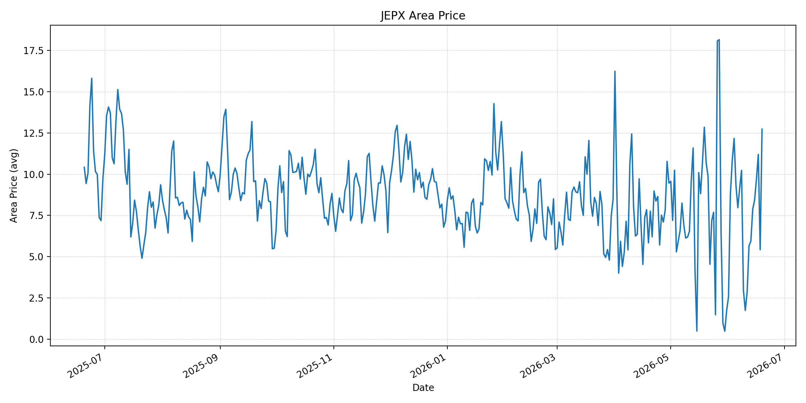
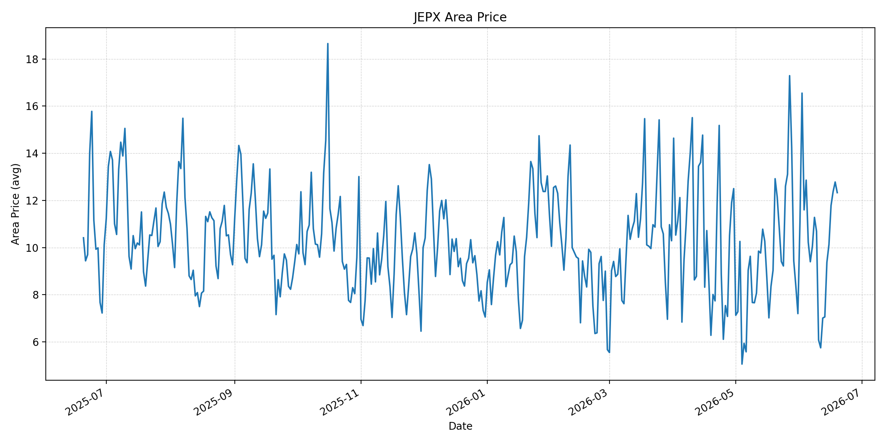
短期トレンド
JKMとJEPXシステムプライスの推移グラフ
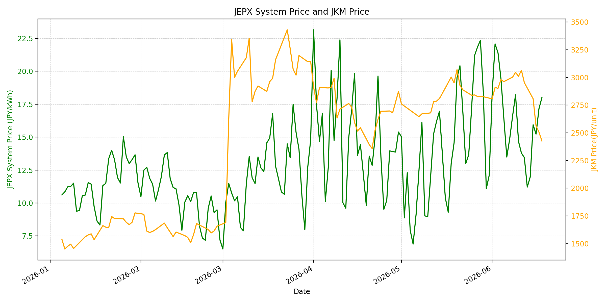
WTIの推移グラフ
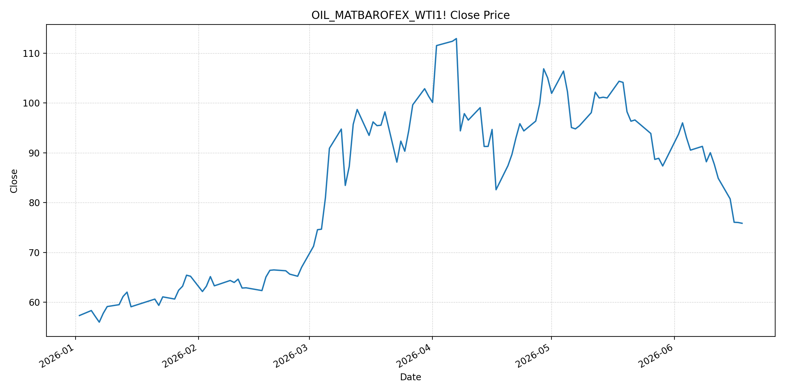
JEPXシステムプライス
JEPXは受渡日ベースの最新非空値で評価しています。最新値は 2026-06-19 分です。先週終値は 2026-06-12 時点の直近値、先月終値は 2026-05-31 時点の直近値で評価しています。
| エリア | 当日価格 | 前日価格 | 前日比（％） | 先週終値 | 先週比（％） | 先月終値 | 先月比（％） | 過去最高値 | 最高値比（％） |
|---|---|---|---|---|---|---|---|---|---|
| システム | 17.92 | 18.00 | -0.44 | 13.45 | 33.23 | 12.10 | 48.10 | 64.06 | -72.03 |
| 北海道 | 17.94 | 15.91 | 12.76 | 13.09 | 37.05 | 11.38 | 57.64 | 73.92 | -75.73 |
| 東北 | 16.41 | 15.93 | 3.01 | 14.72 | 11.48 | 14.64 | 12.09 | 84.92 | -80.68 |
| 東京 | 22.45 | 22.85 | -1.75 | 20.16 | 11.36 | 21.65 | 3.70 | 86.13 | -73.93 |
| 中部 | 20.40 | 20.02 | 1.90 | 17.92 | 13.84 | 15.25 | 33.77 | 52.06 | -60.82 |
| 北陸 | 18.62 | 16.38 | 13.68 | 12.28 | 51.63 | 10.56 | 76.33 | 46.48 | -59.94 |
| 関西 | 18.17 | 16.38 | 10.93 | 12.28 | 47.96 | 10.56 | 72.06 | 46.48 | -60.91 |
| 中国 | 15.06 | 13.48 | 11.72 | 7.01 | 114.84 | 7.66 | 96.61 | 46.48 | -67.60 |
| 四国 | 12.73 | 5.42 | 134.87 | 5.65 | 125.31 | 1.74 | 631.61 | 46.48 | -72.61 |
| 九州 | 12.33 | 12.78 | -3.52 | 7.01 | 75.89 | 7.20 | 71.25 | 40.54 | -69.59 |
LNG先物価格
最新値は 2026-06-18 の LNG(close) です。先週終値は 2026-06-11 時点の直近値、先月終値は 2026-05-29 時点の直近値で評価しています。
| 当日価格 | 前日価格 | 前日比（％） | 先週終値 | 先週比（％） | 先月終値 | 先月比（％） | 過去最高値 | 最高値比（％） |
|---|---|---|---|---|---|---|---|---|
| 2427.00 | 2506.00 | -3.15 | 3065.00 | -20.82 | 2826.00 | -14.12 | 10319.00 | -76.48 |
石油先物価格
最新値は 2026-06-18 の OIL(close) です。先週終値は 2026-06-11 時点の直近値、先月終値は 2026-05-29 時点の直近値で評価しています。
| 当日価格 | 前日価格 | 前日比（％） | 先週終値 | 先週比（％） | 先月終値 | 先月比（％） | 過去最高値 | 最高値比（％） |
|---|---|---|---|---|---|---|---|---|
| 75.85 | 76.01 | -0.21 | 87.71 | -13.52 | 87.36 | -13.18 | 123.70 | -38.68 |
ニュース
イラン情勢に関するニュース
- 2026年6月18日、Guardianは、米国とイランの14項目合意を受け、米ガソリン価格が3月以来初めて4ドルを下回ったと報じました。ただし、戦争前よりなお高く、在庫減少や供給網の影響で価格高止まりリスクも残ります。 参照: The Guardian, 2026-06-18
- 2026年6月19日、Guardianは、正式式典が取り消され、米イランの技術協議はスイスで継続すると報じました。レバノンでのイスラエル軍駐留、ヒズボラ対応、イラン核問題は合意履行の不安定要因です。 参照: The Guardian, 2026-06-19
ホルムズ海峡経由の石油・LNGに関するニュース
- 2026年6月18日、Business Insiderは、米イランMOUにより商船は直ちにホルムズ海峡通航を始められ、60日間は無償通航、米海上封鎖は30日以内に完全解除されると報じました。一方、実際の通航量はなお低水準です。 参照: Business Insider, 2026-06-18
- 2026年6月19日、Guardianは、イランが60日間の交渉後にホルムズ海峡通航料を導入する計画を示したと報じました。サウジアラビアは新制度に反対しており、航路管理と料金を巡る政治リスクは残ります。 参照: The Guardian, 2026-06-19
ホルムズ海峡経由でない石油・LNGに関するニュース
- 過去24時間で、日本向けの非ホルムズ新規大型調達に関する強い追加報道は確認できませんでした。MarketWatchは、通航再開には安全通航の保証と戦争リスク保険料の低下が必要で、正常化は段階的になると報じています。 参照: MarketWatch, 2026-06-18
- Guardianは、原油価格低下後も燃料・肥料・物流コストの影響は2026年中残り得ると報じました。非ホルムズ調達でも、在庫、船腹、保険、サーチャージの正常化には時間差があります。 参照: The Guardian, 2026-06-18
日本国内のイラン戦争に関係するニュース
- 過去24時間で、JEPX制度や国内電力需給ルールを直接変更する日本政府の強い新規発表は確認できませんでした。直近では経済産業省が2026年5月20日に、今夏は全エリアで最低限必要な予備率3%を確保できるため節電要請は実施しないと発表しています。 参照: 経済産業省, 2026-05-20
- 同発表では、国際情勢の変化、異常気象、発電所休廃止、火力発電所の地域集中をリスクとして明記しています。ホルムズ通航再開が進んでも、日本の卸電力価格は燃料調達と地域需給の双方で確認が必要です。 参照: 経済産業省, 2026-05-20
インサイト
ニュース事項による日本の電力市場への影響（短期：数日〜1週間）
- JEPXシステムプライスは 17.92 円/kWhで前日比 -0.44% と小幅低下しましたが、先月比は 48.10% です。LNGは 2427.00、OILは 75.85 と下げても、東京 22.45、中部 20.40 は高止まりしています。
- Business Insiderが報じる60日無償通航と米封鎖解除は短期の燃料上振れを抑える材料です。ただし、Guardianが示す通航料計画と協議継続を踏まえると、数日から1週間では保険料、実際の通航量、船会社の再開判断を確認する局面です。
- 四国は 12.73 円/kWhで前日比 134.87% と反発し、北陸・関西も前日比で上昇しました。燃料価格は弱含みですが、エリア別需給の振れが残っており、短期のJEPXは燃料市況だけでは説明しにくい状態です。
ニュース事項による日本の電力市場への影響（長期：1ヶ月〜半年）
- ホルムズ海峡の通航制度は、60日無償通航後の料金・管理体制を巡って不確実性が残ります。LNGは過去最高値比 -76.48%、OILは -38.68% と低位ですが、制度変更や保険料が残れば半年内の調達コスト低下は限定的です。
- MarketWatchが指摘する安全通航と保険料低下の条件が満たされるまでは、LNG船・原油タンカーの通常運航回復に時間差が出ます。日本の火力燃料調達では、燃料価格そのものより、船腹、保険、通航ルールの安定化が1ヶ月から半年の焦点です。
- 経済産業省は今夏の節電要請を見送っていますが、国際情勢と地域集中リスクは残しています。JEPXシステムの先月比 48.10% 上昇、東京の20円台継続、北陸・関西の上昇を踏まえると、燃料安があっても夏季卸価格は下がり切らない可能性があります。